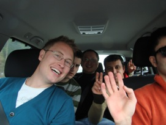
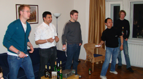
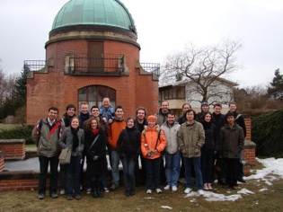
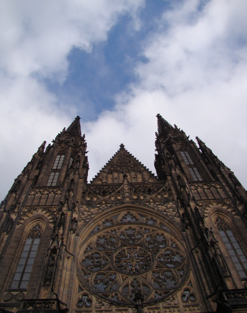
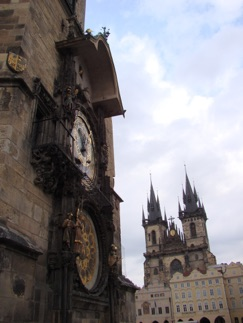
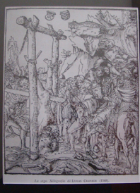
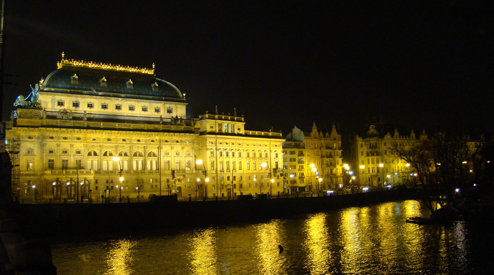
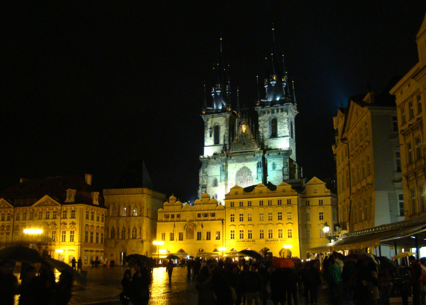

Eastern Europe at its Best

Prague - architecture and torture
As I wrote last time I was getting ready to go to prague with the rest of the IMPRS generation. This entry will be on the trip to Prague,

even though this is not the only stuff I have been doing since last time, but the rest of it is postponed to a later blog entry for now.So... we left for Prague monday morning last week (march 9) in the institute BMW - the right way to ‘ride’ the german autobahn. The trip their went smoothly for everybody (maybe except for Roman - I’m sure the GPS was not working probably;). We arrived in Prague late afternoon monday and because the drive had sort of exhausted most of us, we didn’t really want to explore Prague so we hooked up the Wii to the beamer and had a good laugh.

Tuesday was the ‘scientific’ day, where we visited an observatory close to prague and the institute of physics )or something like that) in Prague. The content wasn’t really heavy in any sense so the day went pretty fast, and since it was the first year retreat

the focus was on the social aspect and we therefore had the rest of the week free for socializing (read: taste the Czech beer) and do some touristing. So this sort of sums wednesday, thursday and friday.The sightseeing in Prague is really looking at different ‘sights’ in the form of buildings, squares and architecture. Some of the things worth seeing in Prague is the Charles bridge, the old cathedral and the ‘fortress’ around it, the national museum, jewish quarter, the astronomical clock, the ‘disney’ castle etc. And we actually managed to se all of these things in the two days we had for sight seeing. I haven’t put pictures of all of these things here, but look at my ‘pictures’-section.

Friday some of us also went to a museum on medieval torture instruments, which was really gross.

It is incredible what people (most of the inventions were german and italian) are capable of. Don’t know it has anything to do with religion, but it seems that most things are okay as long as it is your religion (the church) that dictates it - horrible!! The museum actually made me feel kind of ill - I was actually glad that is was only three (small) floors of museum. Well next time (If there will be a such) I know what I can expect.
Saturday morning we packed and left prague around 1130 with the feeling of have seen and experienced everything we hoped for, except ONE important thing - so I think I have to go back to Prague in the future. The thing we missed was tasting the Czech ‘dog beer’. Monday or tuesday we saw a 4-pack of beers for dogs in a pet store. And since we are all grownups and mature (NOT!) we decided to buy some, but of course the store was closed when we went their - Damn it! But next time... mmm beer with meat flavor...

Oh by the way - I have seen my first ghost!! Or to be more precise - I have seen my first orb. Friday evening we went on a ghost tour in the streets of Prague. We met with a guide a the central square, payed him some money and he then took us on an hour long guided tour where he told us ghost stories about the old Prague. It was actually a good way to see the city, and we actually regretted not having done it one of the first days, ‘cause besides the stories the guide told us what things to notice in the architecture. Well back to the ghosts. He told us that we should take pictures with our flash and if we saw glowing blobs (which he called ‘orbs’) in the pictures this was a signature of super natural activity, i.e., ghosts. And I got an orb!!! (the small white thing left of the building - and it is not the moon ;)
us what things to notice in the architecture. Well back to the ghosts. He told us that we should take pictures with our flash and if we saw glowing blobs (which he called ‘orbs’) in the pictures this was a signature of super natural activity, i.e., ghosts. And I got an orb!!! (the small white thing left of the building - and it is not the moon ;)
Well ghosts, architecture and torture - that’s Prague for you folks ;)
Tuesday, 24 March 2009
